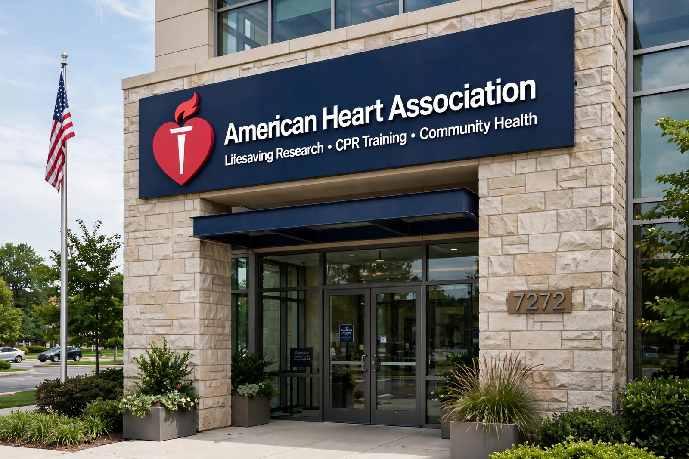

| American Heart Association | |
|---|---|
| Abbreviation | AHA |
| Founded | 1924 (New York City) |
| Type | Nonprofit organisation (501(c)(3)) |
| Headquarters | Dallas, Texas, United States |
| Focus | Cardiovascular health, stroke, CPR training, research funding |
| Founders | Six cardiologists including Paul Dudley White |

The American Heart Association (AHA) is a nonprofit organisation in the United States that funds cardiovascular medical research, educates consumers on healthy living, and fosters appropriate cardiac care in an effort to reduce disability and deaths caused by cardiovascular disease and stroke. Founded in 1924 in New York City by six cardiologists, it is headquartered in Dallas, Texas. The AHA is widely known for publishing guidelines on cardiovascular disease and prevention, setting standards for basic and advanced life support, and operating a network of local chapters and fundraising events such as Heart Walk.
The AHA grew out of earlier local societies for the prevention and relief of heart disease, influenced by the model of the National Tuberculosis Association. In 1948, a radio quiz show, The Walking Man, awarded the association a large windfall of donations, transforming it from a small professional society into a mass public-health organisation with chapters in every state. The 1960s saw the association promote early findings linking smoking, hypertension and cholesterol to heart disease; it issued its first dietary recommendations in 1961. Celebrated cardiologist Paul Dudley White, a founding member, served as a public face of the organisation and as physician to President Dwight D. Eisenhower after his 1955 heart attack.
The AHA is one of the largest funders of cardiovascular research outside the US federal government, having invested billions of dollars since 1949 and supported numerous Nobel Prize winners. It publishes leading journals including Circulation, Stroke and Hypertension. Through its Emergency Cardiovascular Care programmes the AHA trains millions of people annually in CPR, first aid, and advanced cardiovascular life support (ACLS), and its resuscitation guidelines, produced with international partners, set the standard taught worldwide. With the American College of Cardiology it issues influential clinical practice guidelines on hypertension, cholesterol, heart failure and other conditions.
Signature initiatives include Go Red for Women (raising awareness of heart disease in women), Life's Essential 8 (a scorecard of cardiovascular health behaviours and metrics), and advocacy for tobacco control, healthier school foods, stroke systems of care, and funding for the National Institutes of Health. The association's Heart Walk and Jump Rope for Heart events are longstanding fundraisers.
The AHA has been criticised for its heart-check food certification programme, which charges fees and has endorsed products of questionable nutritional quality; for historical inconsistency on dietary fat guidance; and for corporate partnerships with food and pharmaceutical companies that critics say create conflicts of interest. The association has responded by tightening certification criteria and disclosure policies.